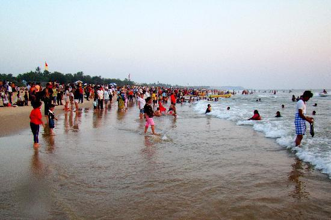
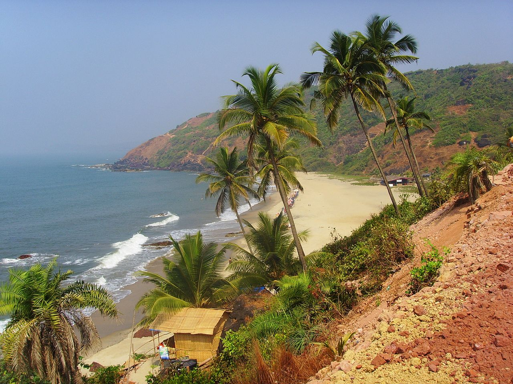
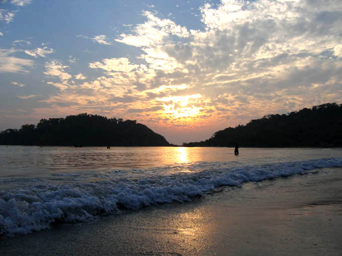
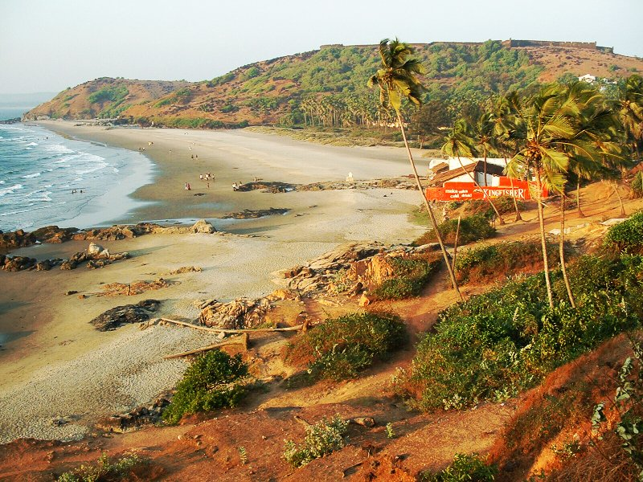
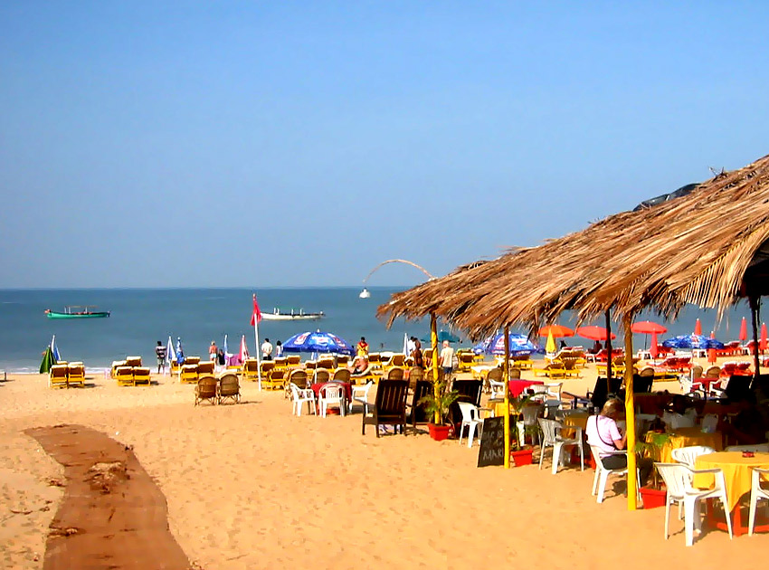

Calangute
Famous in the region as “Queen of the Beaches,” calangute beach boasts through its presence in north-east from state capital Panaji at mere 15 kilometers. It is said that calangute beach goa remains largest one in the northern region. As stories go on, hippies had discovered this beach during the 60’s so is it famous since then. Locals and tourists find here a true replica of Goan beach culture so its popularity is unbound indeed. Tourists from the Western countries and hippies find calangute beach an ultimate place to spend great time through splendid beach experience. Most suitable occasion to visit this beach is Christmas and New Year eves while it welcomes enough rush. It also witnesses large number of tourists representing many age groups visiting in the summers. They spend time here sunbathing so do they enjoy rejuvenating sea breezes in the calangute beach goa trip.
Arambol
Arambol Beach is a traditional fisherman village, located approximately a one hour drive from the Dabolim Airport (GOI) within the Pernem administrative region of northern Goa, India. The beach attracts many international tourists, mainly during the winter season between November and March. Arambol has a distinct bohemian feel which is no longer found in other areas, such as Calangute and this inevitably attracts many alternative travellers. Arambol beach is considered to be one of the most beautiful beaches in Goa, amongst many other popular locations including Vagator, Anjuna and Palolem. It borders North on Keri Beach and South on Mandrem Beach.
Palolem
Palolem beach is largely unspoiled and is inhabited by both local fishermen and by foreign tourists who live in shacks along the shore or in the main village itself. It is about one mile (approximately 1.61 km) long and is crescent-shaped; one can view the entire beach from either end. Both ends of the beach consist of rocks jutting out into the sea. The depth of the sea increases gradually, being shallowest at the northern end of the beach, making it safe for average swimmers, and the currents are not fast. The beach is featured as the Goan residence of Jason Bourne (Matt Damon) in the film The Bourne Supremacy (2004). The initial footage in the movie gives a good idea of the natural beauty of the beach - the distinctive tree covered rocks at one end (known locally as Green Island - to which tours are run) and beach shacks. At the top of the island adjoining Palolem beach there is a stone sculpture created by an American conceptual and land artist Jacek Tylicki called "Give if you can – Take if you have to" also called the "Money stone". It became a pilgrimage destination. At the low tide it is a tough jungle walk and a guide is recommended. People can leave or take money at will at the Money stone.
Vagator
Vagator Beach has dramatic red cliffs looking down on the shore and two fresh water springs within a stone's throw of the sea. But Vagator has little by way of seaside accommodation. Vagator beach Goa 180 Panorama Vagator Beach is split into two main beaches by a seaside headland which holds the car park and lots of stalls selling trinkets, clothes, soft drinks and snacks. As you face the sea, on your right is North Vagator Beach (Big Vagator)and on your left Ozran Beach, more commonly known as Little Vagator Beach. Vagator beach Goa Small waves at Vagator Beach,Goa Vagator is a little more laid back, though still pretty much steeped in the rave culture. The tourist traffic is predominantly Western backpackers, however it has also become popular with Indian tourists, who particularly come to watch the sunset from the rocks. The sunset through rocks is breathtaking from Vagator Beach. After sunset shot taken at Vagator Beach,Goa. There are a number of places playing to a dance & trance crowd during the tourist season. These include: Nine Bar located just above Little Vagator, Hilltop (a little back from Little Vagator) and Primrose back towards Big Vagator beach, they play different types of trance and psychedelic music from different DJ's from around the world. Disco Valley of Vagator Beach is a place that used to be the place for Goan trance parties starting from early 1980s. Also there are a number of Mediterranean and Indian Cafes/Hotels serving a variety of food and drink. The tourist traffic is predominantly Western backpackers, however it has also become popular with Indian tourists, who particularly come to watch the sunset from the rocks.
Baga
aga Beach is a popular beach and tourist destination in North Goa. Baga is located at the north end of the contiguous beach stretch that starts from Sinquerim, Candolim, leads to Calangute and then to Baga. Dolphins can be located at around 1–2 km from the shoreline The beach contains rows of shacks and fishing boats, and at high tide the beach is narrow. The beach is named after the Baga Creek, which empties into the Arabian Sea at the north end of the beach. Baga Beach is also famous for parasailing, water sports (banana ride) and dolphin cruises.